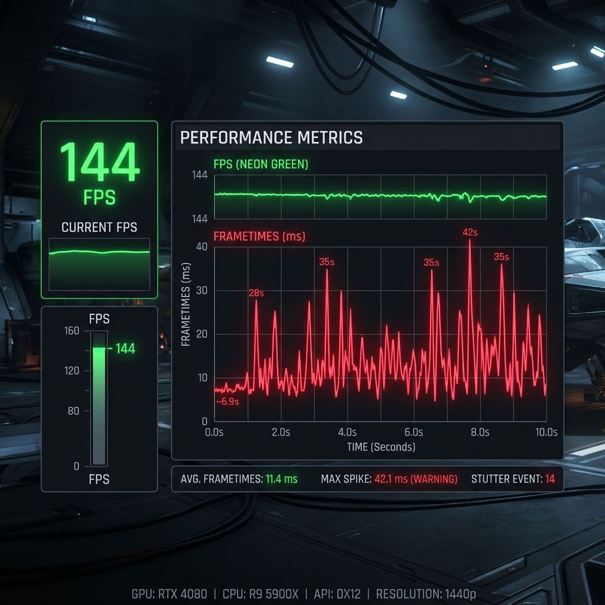

¿Por qué mi Minecraft a 144 FPS se siente con lag? (Micro-stuttering)

El engaño de los FPS altos
Abre el juego (F3) y ves "144 FPS" o incluso "300 FPS", pero cuando giras la cámara sientes que el juego da pequeños tirones molestos. A esto se le conoce como Micro-stuttering.
El problema: El Frametime
Los FPS indican cuántos cuadros se renderizan en 1 segundo. Pero si 100 de esos cuadros se renderizan en el primer medio segundo, y los otros 44 tardan todo el otro medio segundo en aparecer, la entrega de cuadros (Frametime) es inestable. Tu ojo percibe esa irregularidad como lag o tirones, aunque el número promedio siga siendo alto.
La Solución: Limita tus FPS
Muchos jugadores ponen el límite de FPS en "Sin Límite" (Unlimited), lo que obliga a la tarjeta gráfica a trabajar al 100% y generar calor innecesario, causando inestabilidad.
- Ve a Opciones > Gráficos.
- Busca "Límite de FPS".
- Establécelo exactamente en la tasa de refresco de tu monitor (si tienes un monitor normal, ponlo en 60 FPS. Si es gamer, 144 FPS).
- Opcional: Activa V-Sync (Sincronización Vertical) para forzar esta estabilidad, a costa de una mínima latencia.
Con un límite fijo, tu Frametime será una línea plana perfecta y la experiencia de juego será sedosa y ultra suave.